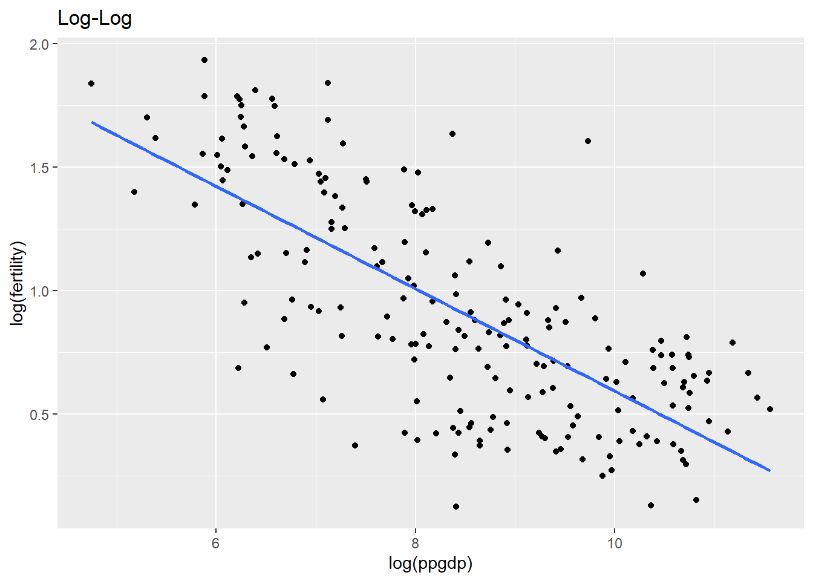
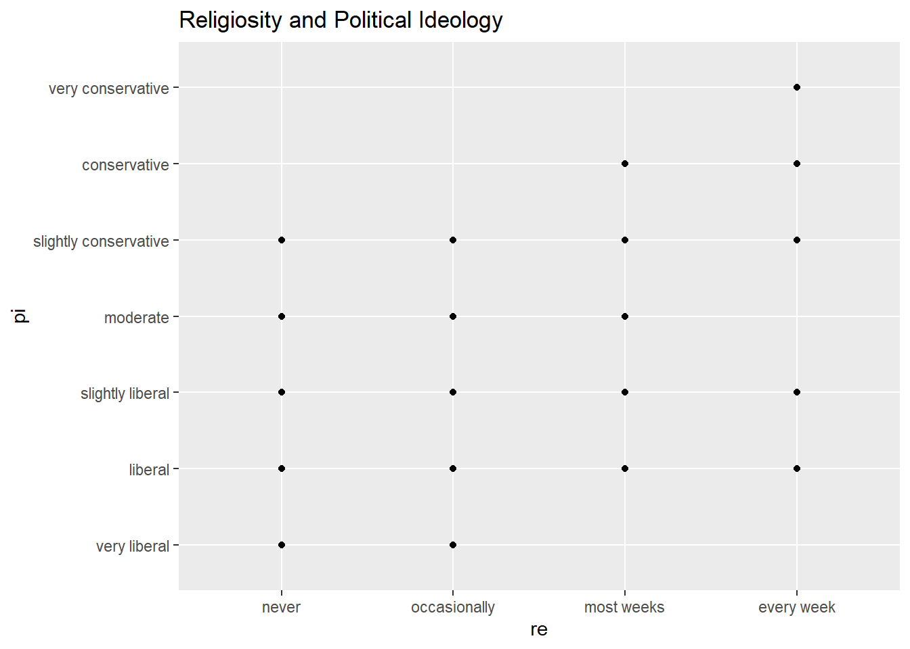

Loading required package: car
Loading required package: carData
Attaching package: 'car'
The following object is masked from 'package:dplyr':
recode
The following object is masked from 'package:purrr':
some
Loading required package: effects
lattice theme set by effectsTheme()
See ?effectsTheme for details.
United Nations (Data file: UN11in alr4) The data in the file UN11 contains several variables, including ppgdp, the gross national product per person in U.S. dollars, and fertility, the birth rate per 1000 females, both from the year 2009. The data are for 199 localities, mostly UN member countries, but also other areas such as Hong Kong that are not independent countries. The data were collected from the United Nations (2011). We will study the dependence of fertility on ppgdp.
1.1.1. Identify the predictor and the response.
The independent (predictor) variable is ppgdp. The response (dependent) variable is fertility.
Code
head(UN11)
region group fertility ppgdp lifeExpF pctUrban
Afghanistan Asia other 5.968 499.0 49.49 23
Albania Europe other 1.525 3677.2 80.40 53
Algeria Africa africa 2.142 4473.0 75.00 67
Angola Africa africa 5.135 4321.9 53.17 59
Anguilla Caribbean other 2.000 13750.1 81.10 100
Argentina Latin Amer other 2.172 9162.1 79.89 93
1.1.2 Draw the scatterplot of fertility on the vertical axis versus ppgdp on the horizontal axis and summarize the information in this graph. Does a straight-line mean function seem to be plausible for a summary of this graph?
This data looks curvilinear. A straight-line mean function is not favored.
Code
library(ggplot2)ggplot(data = UN11, aes(x = ppgdp, y = fertility)) +geom_point()
1.1.3 Draw the scatterplot of log(fertility) versus log(ppgdp) using natural logarithms. Does the simple linear regression model seem plausible for a summary of this graph? If you use a different base of logarithms, the shape of the graph won’t change, but the values on the axes will change.
Yes, in the Log-Log model, linear regression seems more likely to work.
Code
library(ggplot2)ggplot(data = UN11, aes(x =log(ppgdp), y =log(fertility))) +geom_point() +ggtitle("Log-Log") +geom_smooth(method ='lm', se = F)
`geom_smooth()` using formula = 'y ~ x'

Question 2
Annual income, in dollars, is an explanatory variable in a regression analysis. For a British version of the report on the analysis, all responses are converted to British pounds sterling (1 pound equals about 1.33 dollars, as of 2016).
How, if at all, does the slope of the prediction equation change?
I assume “responses” mean responses to a survey. I have created fake survey data to understand the question:
In the UK version, the slope is multiplied by 1.33.
How, if at all, does the correlation change?
Since only the units are changing, the correlation does not change. See:
Code
cor(satisfaction,us_income)
[1] 0.9776455
Code
cor(satisfaction,uk_income)
[1] 0.9776455
Question 3
Water runoff in the Sierras (Data file: water in alr4) Can Southern California’s water supply in future years be predicted from past data? One factor affecting water availability is stream runoff. If runoff could be predicted, engineers, planners, and policy makers could do their jobs more efficiently. The data file contains 43 years’ worth of precipitation measurements taken at six sites in the Sierra Nevada mountains (labeled APMAM, APSAB, APSLAKE, OPBPC, OPRC, and OPSLAKE) and stream runoff volume at a site near Bishop, California, labeled BSAAM. Draw the scatterplot matrix for these data and summarize the information available from these plots. (Hint: Use the pairs() function.)
Code
pairs(water)
pair() shows pairwise correlations. It looks like OPBC, OPRC, OPSLAKE, and BSAAM are very similar to each other. Likewise, APSLAK, APSAB, and APMAM are similar to each other. Taken separately, the two groups are not similar to each other. There is no pattern in the year of observation. I would be comfortable making predictions within the groups individually, but not based off the year.
Question 4
Professor ratings (Data file: Rateprof in alr4) In the website and online forum RateMyProfessors.com, students rate and comment on their instructors. Launched in 1999, the site includes millions of ratings on thousands of instructors. The data file includes the summaries of the ratings of 364 instructors at a large campus in the Midwest (Bleske-Rechek and Fritsch, 2011). Each instructor included in the data had at least 10 ratings over a several year period. Students provided ratings of 1–5 on quality, helpfulness, clarity, easiness of instructor’s courses, and raterInterest in the subject matter covered in the instructor’s courses. The data file provides the averages of these five ratings. Create a scatterplot matrix of these five variables. Provide a brief description of the relationships between the five ratings.
Quality, helpfulness, and clarity are all highly correlated. This tells me that perceptions of quality really hinge on helpfulness and clarity from the professor. However, classes which are high quality, helpful, and clear are not always easy (although there is some kind of positive correlation).
To some degree, it does look like each pairwise combination is positively correlated, with the possible exception of raterInterest and easiness.
For the student.survey data file in the smss package, conduct regression analyses relating (by convention, y denotes the outcome variable, x denotes the explanatory variable) (i) y = political ideology and x = religiosity, (ii) y = high school GPA and x = hours of TV watching.
Code
#Levels look to be correct already:#as.factor(student.survey$pi)summary(lm(as.numeric(student.survey$pi) ~as.numeric(student.survey$re)))
Call:
lm(formula = as.numeric(student.survey$pi) ~ as.numeric(student.survey$re))
Residuals:
Min 1Q Median 3Q Max
-2.81243 -0.87160 0.09882 1.12840 3.09882
Coefficients:
Estimate Std. Error t value Pr(>|t|)
(Intercept) 0.9308 0.4252 2.189 0.0327 *
as.numeric(student.survey$re) 0.9704 0.1792 5.416 1.22e-06 ***
---
Signif. codes: 0 '***' 0.001 '**' 0.01 '*' 0.05 '.' 0.1 ' ' 1
Residual standard error: 1.345 on 58 degrees of freedom
Multiple R-squared: 0.3359, Adjusted R-squared: 0.3244
F-statistic: 29.34 on 1 and 58 DF, p-value: 1.221e-06
Call:
lm(formula = as.numeric(student.survey$hi) ~ as.numeric(student.survey$tv))
Residuals:
Min 1Q Median 3Q Max
-1.2583 -0.2456 0.0417 0.3368 0.7051
Coefficients:
Estimate Std. Error t value Pr(>|t|)
(Intercept) 3.441353 0.085345 40.323 <2e-16 ***
as.numeric(student.survey$tv) -0.018305 0.008658 -2.114 0.0388 *
---
Signif. codes: 0 '***' 0.001 '**' 0.01 '*' 0.05 '.' 0.1 ' ' 1
Residual standard error: 0.4467 on 58 degrees of freedom
Multiple R-squared: 0.07156, Adjusted R-squared: 0.05555
F-statistic: 4.471 on 1 and 58 DF, p-value: 0.03879
(a)Graphically portray how the explanatory variable relates to the outcome variable in each of the two cases
Code
#as.numeric(student.survey$pi)# (i) y = political ideology and x = religiositylibrary(ggplot2)ggplot(data = student.survey, aes(x = re, y = pi)) +geom_point()
#Alternate way:library(ggplot2)ggplot(data = student.survey, aes(x = re, y = pi)) +geom_point() +geom_smooth(method ='lm', se = F) +ggtitle ("Religiosity and Political Ideology")
`geom_smooth()` using formula = 'y ~ x'

Code
#(ii) y = high school GPA and x = hours of TV watchinglibrary(ggplot2)ggplot(data = student.survey, aes(x = hi, y = tv)) +geom_point() +geom_smooth(method ='lm', se = F) +ggtitle ("High School GPA and TV watched (in hours)")
Summarize and interpret results of inferential analyses.
Political Ideology ~ Religiosity
Political ideology is slightly correlated with religiosity with an R-squared of 0.3359. The results are statistically significant. However, I would not say this is quite enough for predictive purposes because of that low R-squared value.
High School GPA ~ TV Watched
Looking at the scatterplot makes it appear that this data is all over the place with outliers. It does seem the higher GPA students do watch the least TV, and the linear regression is technically statistically significant with a p-value of 0.0388. However, the R-squared value is a very low 0.07156. I would not make any inferences about GPA’s causal effect on TV.
Source Code
---title: "Homework 3"author: "Steve O'Neill"description: "Homework 3"date: "10/29/2022"df-paged: trueformat: html: toc: true code-fold: true code-copy: true code-tools: truecategories: - hw3---```{r}library(tidyverse)library(alr4)library(smss)data("UN11")data("water")data("Rateprof")data("student.survey")```Questions:## Question 1> United Nations (Data file: UN11in alr4) The data in the file UN11 contains several variables, including ppgdp, the gross national product per person in U.S. dollars, and fertility, the birth rate per 1000 females, both from the year 2009. The data are for 199 localities, mostly UN member countries, but also other areas such as Hong Kong that are not independent countries. The data were collected from the United Nations (2011). We will study the dependence of fertility on ppgdp.1.1.1. Identify the predictor and the response.The independent (predictor) variable is `ppgdp`. The response (dependent) variable is `fertility`.```{r}head(UN11)```> 1.1.2 Draw the scatterplot of fertility on the vertical axis versus ppgdp on the horizontal axis and summarize the information in this graph. Does a straight-line mean function seem to be plausible for a summary of this graph?This data looks curvilinear. A straight-line mean function is not favored.```{r}library(ggplot2)ggplot(data = UN11, aes(x = ppgdp, y = fertility)) +geom_point()```> 1.1.3 Draw the scatterplot of log(fertility) versus log(ppgdp) using natural logarithms. Does the simple linear regression model seem plausible for a summary of this graph? If you use a different base of logarithms, the shape of the graph won't change, but the values on the axes will change.Yes, in the Log-Log model, linear regression seems more likely to work.```{r}library(ggplot2)ggplot(data = UN11, aes(x =log(ppgdp), y =log(fertility))) +geom_point() +ggtitle("Log-Log") +geom_smooth(method ='lm', se = F)```## Question 2> Annual income, in dollars, is an explanatory variable in a regression analysis. For a British version of the report on the analysis, all responses are converted to British pounds sterling (1 pound equals about 1.33 dollars, as of 2016).> (a) How, if at all, does the slope of the prediction equation change?I assume "responses" mean responses to a survey. I have created fake survey data to understand the question:```{r}satisfaction <-c(1,2,3,4,5)us_income <-c(20010,30450,40000,51000,75000)uk_income <-c(us_income /1.33) mod_us <-lm(satisfaction ~ us_income)summary(mod_us)mod_uk <-lm(satisfaction ~ uk_income)summary(mod_uk)```In the UK version, the slope is multiplied by 1.33.> (b) How, if at all, does the correlation change?Since only the units are changing, the correlation does not change. See:```{r}cor(satisfaction,us_income)cor(satisfaction,uk_income)```## Question 3Water runoff in the Sierras (Data file: water in alr4) Can Southern California's water supply in future years be predicted from past data? One factor affecting water availability is stream runoff. If runoff could be predicted, engineers, planners, and policy makers could do their jobs more efficiently. The data file contains 43 years' worth of precipitation measurements taken at six sites in the Sierra Nevada mountains (labeled APMAM, APSAB, APSLAKE, OPBPC, OPRC, and OPSLAKE) and stream runoff volume at a site near Bishop, California, labeled BSAAM. Draw the scatterplot matrix for these data and summarize the information available from these plots. (Hint: Use the pairs() function.)```{r}pairs(water)````pair()` shows pairwise correlations. It looks like OPBC, OPRC, OPSLAKE, and BSAAM are very similar to each other. Likewise, APSLAK, APSAB, and APMAM are similar to each other. Taken separately, the two groups are not similar to each other. There is no pattern in the year of observation. I would be comfortable making predictions within the groups individually, but not based off the year. ## Question 4>Professor ratings (Data file: Rateprof in alr4) In the website and online forum RateMyProfessors.com, students rate and comment on their instructors. Launched in 1999, the site includes millions of ratings on thousands of instructors. The data file includes the summaries of the ratings of 364 instructors at a large campus in the Midwest (Bleske-Rechek and Fritsch, 2011). Each instructor included in the data had at least 10 ratings over a several year period. Students provided ratings of 1--5 on quality, helpfulness, clarity, easiness of instructor's courses, and raterInterest in the subject matter covered in the instructor's courses. The data file provides the averages of these five ratings. Create a scatterplot matrix of these five variables. Provide a brief description of the relationships between the five ratings.Quality, helpfulness, and clarity are all highly correlated. This tells me that perceptions of quality really hinge on helpfulness and clarity from the professor. However, classes which are high quality, helpful, and clear are not always easy (although there is some kind of positive correlation).To some degree, it does look like each pairwise combination is positively correlated, with the possible exception of raterInterest and easiness.```{r}ratings <- Rateprof %>%select(quality, helpfulness, clarity, easiness, raterInterest)pairs(ratings)```## Question 5>For the student.survey data file in the smss package, conduct regression analyses relating (by convention, y denotes the outcome variable, x denotes the explanatory variable) (i) y = political ideology and x = religiosity, (ii) y = high school GPA and x = hours of TV watching.```{r}#Levels look to be correct already:#as.factor(student.survey$pi)summary(lm(as.numeric(student.survey$pi) ~as.numeric(student.survey$re)))summary(lm(as.numeric(student.survey$hi) ~as.numeric(student.survey$tv)))```>(a)Graphically portray how the explanatory variable relates to the outcome variable in each of the two cases ```{r}#as.numeric(student.survey$pi)# (i) y = political ideology and x = religiositylibrary(ggplot2)ggplot(data = student.survey, aes(x = re, y = pi)) +geom_point()pi_re <- student.survey %>%select(pi, re)pairs(pi_re)#Alternate way:library(ggplot2)ggplot(data = student.survey, aes(x = re, y = pi)) +geom_point() +geom_smooth(method ='lm', se = F) +ggtitle ("Religiosity and Political Ideology")#(ii) y = high school GPA and x = hours of TV watchinglibrary(ggplot2)ggplot(data = student.survey, aes(x = hi, y = tv)) +geom_point() +geom_smooth(method ='lm', se = F) +ggtitle ("High School GPA and TV watched (in hours)")#Alternate way:hi_tv <- student.survey %>%select(hi, tv)pairs(hi_tv)```>(b) Summarize and interpret results of inferential analyses.### Political Ideology ~ ReligiosityPolitical ideology is slightly correlated with religiosity with an R-squared of 0.3359. The results are statistically significant. However, I would not say this is quite enough for predictive purposes because of that low R-squared value.### High School GPA ~ TV WatchedLooking at the scatterplot makes it appear that this data is all over the place with outliers. It does seem the higher GPA students do watch the least TV, and the linear regression is technically statistically significant with a p-value of 0.0388. However, the R-squared value is a very low 0.07156. I would not make any inferences about GPA's causal effect on TV.